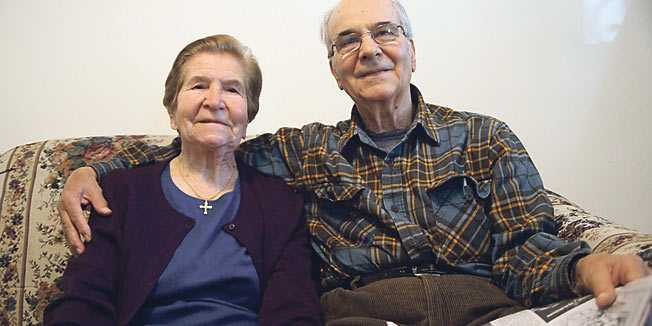

UNESCO je žejanski uvrstio u Crvenu knjigu svjetskih ugroženih jezika. Posjetili smo obitelj koja ga još čuva od nestanka
 New York - Aj ne žalosno nanke misli de nostre krajure - govori nam 92-godišnja Franka Jelovčić dok sjedimo u njezinoj kući u Queensu u New Yorku. Teta Franka govori, ali mi je ne razumijemo jer njezin jezik je istrorumunjski i sve je manje živućih govornika.
Poznat i kao žejanski ili vlaški, taj jezik odumire i u selima na obroncima Ćićarije, gdje se očuvao stoljećima. Ovdje, u New Yorku, danas živi više izvornih govornika vlaškog nego u selima odakle potječe. Upravo o tome nam teta Franka i govori.
- Žalosno nam je čak i misliti na naše krajeve - kaže u ovoj izjavi s početka prevedenoj na hrvatski. - Sav narod je ovdje. Tamo gdje smo prije živjeli bilo je tisuću ljudi. Čak bi i svećenik u crkvi govorio vlaški. A sad ih ima možda dvadeset. Sve su kuće zapuštene i sve je prazno - govori teta Franka, što na vlaškom zvuči ovako: "Tote kasele zapustite ši tot prazno".
New York Times nedavno je Franku Jelovčić i njezinu kći Valneu Smilović uključio u reportažu o izumirućim svjetskim jezicima koji se danas češće govore u New Yorku nego u krajevima odakle potječu.
Tipična emigrantska priča
- Nikad nisam mislila da ću bit’ u novine sad o starosti - kaže teta Franka. U Queensu razgovaramo s njome, Valneom, Frankinim bratom barba Pepom i Zvjezdanom Vrzić, lingvisticom s poznatog sveučilišta New York University koja se bavi proučavanjem istrorumunjskog.
Teta Franka ima 92, a barba Pepo 81 godinu i u New Yorku žive od 1969. Došli su iz Drage, zaseoka sela Brdo, koje je, uz sela Šušnjevicu, Novu Vas, Jasenovik i Letaj, jedno od sela u Istri u kojima se govorio istrorumunjski jezik. Ljudi su iz tih sela odavno odlazili u Ameriku.
- Još 1927. barba Rumano Ljubičić prvi je iz naše familije otišao u Ameriku - kaže Pepo Jelovčić.
Mnogi su odlazili u novi svijet i nikad se nisu vratili, kao što je slučaj i s barba Pepom. Pitamo ga kako to da nikad naviše nije posjetio rodni kraj. Njegov odgovor je tipična imigrantska američka priča.
- Brod kojim sam došao u Ameriku koštao je 500 dolara. Stigavši u New York, bilo mi je teško jer nisam znao engleski i rekao sam si da ću, čim uštedim prvih 500 dolara, sjesti na brod i otići natrag. Ali, kad sam uštedio 500, razmišljao sam kako ću uštedjeti 5000. Kad sam uštedio 5000, razmišljao sam kako ću zaraditi dovoljno da kupim kuću. Kad sam zaradio za kuću, trebalo je još više raditi da bi se otplatio kredit... Što sam više razumio engleski, bilo mi je lakše. Svidjelo mi se ovdje, mojoj obitelji se sviđa ovdje, i tu ćemo umrijeti - kaže barba Pepo.
A s ljudima poput njega, tete Franke ili Valnee Smilović vjerojatno će umrijeti i jezik koji je UNESCO uvrstio u Crvenu knjigu svjetskih ugroženih jezika.
Projekt dokumentiranja
Zvjezdana Vrzić bori se da se taj jezik dokumentira prije nego što nestane.
- Procjenjuje se da u selima i Istri živi još samo oko 150 izvornih govornika koji su vlaški naučili kao djeca. Sigurno ima još polugovornika, onih koji ga razumiju, ali ovo je brojka ljudi koji ga govore tečno. U ostatku Hrvatske možda ima oko 300 izvornih govornika vlaškog koji su se odselili iz sela u gradove. U New Yorku ima oko 400 izvornih govornika - kaže Zvjezdana Vrzić. Ideja njezina projekta, na kojem radi u suradnji s Etnografskim muzejem Istre, jest da rezultati tog dokumentiranja vlaškog ili žejanskog jezika budu dostupni kroz dva zavičajna centra koja bi se osnovala u selima Žejane i Šušnjevica.
- Mojoj noni taj jezik je bio materinski, a moja majka ga je govorila kao drugi jezik - kaže Zvjezdana Vrzić.
Inoslav Bešker: Kako govore Ćiribiri
Žejanski, po mjestu Žejanama na Ćićariji, lokalni je naziv dijalekta koji se u romanistici zove istrorumunjskim i koji je najmanje raširen od četiriju povijesnih dijalekata rumunjskoga jezika: njime - kako piše Goran Filipi - govori još samo 250 osoba u Istri i na rubu je izumiranja. Blizak je dačkorumunjskome (dakoromanskome), ali ima i snažnih utjecaja čakavskoga hrvatskoga, bez turcizama (osim posrednih) i grecizama. Kao i moliški Hrvati, koji se smatraju Talijanima i i lingvističkom manjinom, tako se i govornici istrorumunjskih govora uglavnom smatraju Hrvatima, a svoj jezik zovu po mjestima u kojima žive: žejanski, susnjevski, brijanski, a ponegdje i vlaške limbe (vlaški jezik). Istrorumunji su potomci Vlaha koje je na Krku oko 1465.-1468. (kako navodi Strčić) naselio krčki knez Anž (Ivan VII.) Frankapan, koji je otok stavio pod mletački suvere-nitet. Filipi navodi da su se odatle, iz Dalmacije, naselili u Istru. Posljednji koji je na Krku govorio vlaški (istrorumunjski) bio je Mate Bajčić Gašpović, a umro je 1875. Pri doseljenju su Istro-rumunji bili nazivani i Murlaki, a kasnije Ćići, ali sami nisu rabili nijedan od ta dva egzogamna naziva, ali se neki sami nazivaju i Vlasima. Njihovu jeziku pripadaju tamošnja prezimena Faraguna, Kožul, Licul, Pizzul, Poropat itd. Ivan Feretić je 1819. zabilježio na Krku Očenaš i Zdravomariju na istrorumunjskome.
Tomislav Krasnec
June 13, 2010
© 2010 Jutarnji list